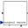

PartialCompositeStepSuperclass of a subgraph, i.e., a composite step that has internally a StateGraph |
|
Parameters (2)
| nSuspend |
Value: 1 Type: Integer Description: Number of suspend ports |
|---|---|
| nResume |
Value: 1 Type: Integer Description: Number of resume ports |
Outputs (1)
| active |
Type: Boolean Description: = true if step is active, otherwise the step is not active |
|---|
Connectors (4)
Components (3)
| stateGraphRoot |
Type: CompositeStepState Description: Communication port between the CompositeStep and the steps within the CompositeStep |
|
|---|---|---|
| outerState |
Type: OuterState |
|
| innerState |
Type: InnerState |
Extended by (5)
|
Modelica.Fluid.Examples.ControlledTankSystem.Utilities
Normal operation of tank system (button start pressed) |
|
|
Modelica.StateGraph.Examples.Utilities
Composite step used to demonstrate exceptions (in StateGraph.Examples.ShowExceptions) |
|
|
Modelica.StateGraph.Examples.Utilities
Composite step used to demonstrate exceptions (in StateGraph.Examples.ShowExceptions) |
|
|
Modelica.StateGraph.Examples.Utilities
State machine demonstrating a composite step (used in StateGraph.Examples.ShowCompositeStep) |
|
|  |
Modelica.StateGraph.Examples.Utilities
State machine defining the time instants when to fill or empty a tank |